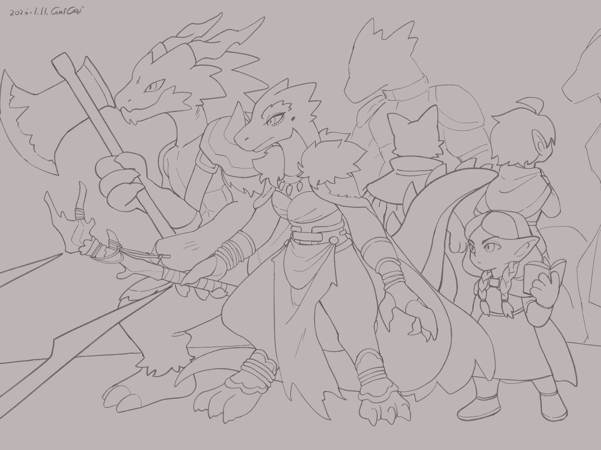

Chapter 1: Unfamiliar Hometown
The Unacknowledged Child


The Unacknowledged Child
15049.05.20
騎著艾瑞利斯家贈與的馬匹，中途之家花了大約兩週的時間，來到了雷亞的家鄉之一：銀龍口中的萊斯諾。厚重的城門外，兩名警戒的龍人衛兵並未刻意刁難，但從他們的眼神可以看出，這不是個歌舞昇平的城鎮。雷亞近鄉情卻，複雜的心情全寫在臉上。
冒險者們依衛兵的指示，騎著馬入城後，將馬匹停在城門內。依照他們說法，萊斯諾城內禁止騎馬。放眼望去，城內清一色是龍人，表情肅穆，並未多看冒險者們一眼，黃昏的街道上，他們像是各自忙著緊迫的事務般，讓阿龍覺得與同是龍人城鎮的拉撒拿大相徑庭。
由於城內大家都說龍語，雷亞又因為不想被認出來，盡可能低調（她拉上自己的帽兜，把自己屬於蜥蜴人特徵的部分遮住。她過去從她的師父口中聽說，萊斯諾與她的另一個家鄉，以蜥蜴人為主的克萊芬長年緊繃，戰線一觸即發，她可不想當引發戰爭的導火線），阿龍嘗試和路上看起來較為和善的居民說話，詢問旅店的位置。
冒險者們入住旅店後，一同外出覓食。依照阿龍的直覺判斷，越往城內，越有機會有餐館，於是大家便往城內走。
突然，數把長矛刺出，中途之家冷不防地被捲入戰鬥。四名龍人嘗試包圍他們，阿龍和雷亞各制服住一名龍人，但毛毛和羅羅則因為被攻擊到，憤而將他們抓到的龍人殺死。定睛一看，這幾名龍人穿著的竟是城內的衛兵服，這讓情勢變得很不妙。兩名身強力壯的軍士竄出，比起被制服的衛兵們，他們的長劍更為致命。中途之家發現敵人越來越強硬，甚至不久後又有弓兵埋伏。阿龍與雷亞聽見衛兵們用龍語喊著「包圍他們」、「抓住他們」，也許最好的策略不是魯莽地誓死抗戰，而是接受失敗，然後見機行事。瑪莉貝爾率先舉起了雙手以示投降，並傳訊叫羅羅冷靜。一名將軍冷酷地現身，嘲諷似地宣判中途之家的失敗，並指示其他衛兵將中途之家的手紛紛綁起來，押著他們往前走。
來到一棟建築物內，瑪萊雅・凱耀將軍直率地推開門，走了進去。衛兵們則壓著中途之家一一跪下。在他們面前的除了凶神惡煞的紅龍人瑪萊雅・凱耀將軍外，還有一名挺拔莊重的藍龍人，以及夾在他們中間，畏畏縮縮的金龍人。
金龍人自我介紹，是萊斯諾的市長，也就是龍冠，名為賽爾斯・費利昂。他身邊的除了瑪萊雅・凱耀將軍外，則是格雷斯卓・費雷曼大人。阿龍回嘴說他也是龍冠，而這引起了格雷斯卓・費雷曼大人的注意。格雷斯卓・費雷曼大人表示近期看到了一篇報導，寫到拉撒拿新任龍冠上任之事，也得知了這群與龍冠一起被綁的人就是報導中的「中途之家」。他告訴阿龍，前幾天有一名來自拉撒拿的信差，說要來這裡找拉撒拿的龍冠。格雷斯卓・費雷曼大人請人將信差帶了出來。
這名銀龍人信差很明顯狀況不好，在萊斯諾想必備受欺凌。信差跪在阿龍面前，表示在中途之家離開拉撒拿不久後，一名男人落魄地來到了拉撒拿，喊著要見龍冠。這名斷了雙手的男人自稱奧斯華，他表示希望龍冠來和他一起拯救一位名叫佩妮的女子。聽見佩妮的名字，阿龍整個人精神都起來了。在瑪萊雅・凱耀將軍基於他的身份的許可下，阿龍手上的麻繩被解開。他知道關於佩妮的消息是他一直在等待的，如今雖然聽起來不是好消息，但他無法放著不管。其他冒險者們疑惑著，才花了兩週時間來到萊斯諾，難道又要騎馬回拉撒拿了嗎？他們馬上被瑪萊雅・凱耀將軍喝斥，表示那是人家拉撒拿龍冠的事，不代表他們就能跟龍冠走。
阿龍深切明白，他必須回去，但他也無法放下這群一同冒險的夥伴。在將軍的許可下，阿龍一個一個和夥伴們道別。他將在貝瑟頓拿到的戒指套在瑪莉貝爾指頭上，表示自己會回來的；阿龍看向鑰，希望鑰能好好照顧這群衝動的孩子們；接著是羅羅，他從羅羅口袋裡任性地抓走了幾顆糖果，表示之後會帶更多糖果回來給他；對於同樣有藍尾巴以及龍人血脈的雷亞，阿龍也給予祝福，並將堂姐贈與他的武器交給雷亞保管；最後，阿龍走向毛毛，回憶著大家初相見時，他背著毛毛跳樓的激情，掏出了當時用毛毛的毛製成的耳塞，想還給毛毛，但遭到毛毛拒絕了。最終，阿龍看向站在門口等候的信差，與中途之家揮揮手後，暫時別離了。
瑪萊雅・凱耀將軍走到大家面前，向中途之家簡單說明萊斯諾與克萊芬的情勢：萊斯諾長期認定克萊芬是他們不可分割的一塊，因此他們計劃動用武力把克萊芬拿下。格雷斯卓・費雷曼大人嘗試打斷，表示不可以這樣衝動用武力，兩個城鎮本來就應該是分治而立，並沒有誰屬於誰。但他沒說幾句話，就被將軍搧巴掌而打斷，而當然，龍冠賽爾斯・費利昂毫無說話的餘地。將軍表示，他們決定讓中途之家作為間諜，到克萊芬潛藏一週，時間到時，會有人接他們回來，若執行順利，會給每個人一枚白金幣作為獎賞。冒險者們原本對此十分反感，但聽到了豐厚的報酬後，便接受了。在將軍的指示下，兩名衛兵拿了粗重的麻繩，將冒險者們串起，領著他們走出了房子，一路離開萊斯諾。
城門外，冒險者們試著和壓著他們的衛兵攀談，得知他們對將軍的強勢也有不滿，但他們對於克萊芬的所屬權立場與將軍一致。城外遠處，一雙眼默默地觀察著這串詭異的行徑。那人放出了一隻梟，梟飛到了前方衛兵的麻繩前，試圖啄擊，但沒能成功，只讓衛兵感到煩躁。不久後，大家來到克萊芬的城門口。兩名萊斯諾的衛兵和克萊芬城門口的衛兵攀談了幾句（雷亞聽見他們說著「上級要把這些人放進城內一段時間」，克萊芬的衛兵表示理解）。在中途之家被鬆綁後，克萊芬的大門敞開，他們便紛紛走了進去。陌生的人影也趁著大門關上之前竄了進去。
克萊芬的氛圍與萊斯諾天壤地別。城門口內是滿滿的攤販，食物的香氣逼人，一轉眼，毛毛已經買了兩隻雞腿了。竄入門口的那人拍了拍雷亞的肩膀。雷亞一回頭，看見一名深綠色皮膚的蜥蜴人。他自我介紹名為拉維，認識雷亞的師父，也知道雷亞的身世。雷亞心中有太多問題想請教，於是在拉維的帶領下，大家前往附近一間酒館，叫了一些食物來果腹。
15049.05.20
Riding the horses gifted by House Arylith, the Halfway House spent about two weeks reaching one of Leah's hometowns: Leisnor, as the silver dragon had called it. Outside the heavy city gates, two dragonborn guards on alert did not deliberately make things difficult for them, but the look in their eyes made it clear this was no peaceful town of ease and celebration. Leah had finally returned close to home, and her complicated feelings were written all over her face.
Following the guards' instructions, the adventurers rode into the city and left their horses just inside the gate. According to the guards, riding horses was forbidden within Leisnor. Everywhere they looked, the city was filled entirely with dragonborn wearing solemn expressions, barely sparing the adventurers a glance. At dusk, the streets felt as if everyone were hurrying about urgent business, making Al-lon feel that this place was utterly different from Rathanad, despite both being dragonborn cities.
Since everyone in the city spoke Draconic, and Leah wanted to avoid being recognized, she kept as low a profile as possible. She pulled up her hood to hide the parts of herself that marked her as lizardfolk. She had heard from her master long ago that Leisnor and her other homeland, the lizardfolk-majority Clyphen, had remained tense with each other for years, always on the edge of war. She had no desire to become the spark that set it off. Meanwhile, Al-lon tried speaking to a resident who looked relatively approachable and asked where they could find an inn.
After settling into the inn, the adventurers went out together to find food. By Al-lon's intuition, the farther they went into the city, the better their chances of finding a restaurant, so the group headed inward.
Without warning, several spears thrust out, and the Halfway House was abruptly dragged into battle. Four dragonborn tried to surround them. Al-lon and Leah each subdued one of them, but Fur and Roel, after being attacked, angrily killed the dragonborn they had captured. Looking more closely, they realized these dragonborn were wearing the city's guard uniforms, which made the situation much worse. Two heavily built soldiers charged in, and their longswords were far deadlier than those of the subdued guards. The Halfway House soon realized that the enemy was growing more and more aggressive, and before long archers were even lying in ambush. Al-lon and Leah heard the guards shouting in Draconic, "Surround them!" and "Capture them!" It seemed that the best strategy was not reckless resistance to the death, but accepting defeat and waiting for a better chance. Maribel was the first to raise both hands in surrender, and she sent Roel a message telling him to calm down. Then a general appeared coldly on the scene, mockingly pronounced the Halfway House defeated, and ordered the other guards to bind their hands and march them forward.
They were brought into a building, where General Maliya Kaeyal pushed the door open bluntly and strode inside. The guards forced the members of the Halfway House to kneel one by one. Before them stood not only the fierce-looking red dragonborn General Maliya Kaeyal, but also an upright and dignified blue dragonborn, and between them, a timid-looking gold dragonborn.
The gold dragonborn introduced himself as the mayor of Leisnor, the Crown himself, Saerus Pharyon. Beside him stood General Maliya Kaeyal, and the minister, Syr Galaestrel Freyeman. Al-lon shot back that he was also a Crown, and that immediately caught Lord Galaestrel's attention. Lord Galaestrel said that he had recently read a report about the new Crown of Rathanad taking office, and had learned that the group tied up alongside that Crown was the one called the Halfway House. He told Al-lon that a messenger from Rathanad had arrived a few days earlier, saying he wanted to find Rathanad's Crown. Lord Galaestrel had the messenger brought out.
The silver dragonborn messenger was clearly in poor condition and had obviously suffered mistreatment in Leisnor. Kneeling before Al-lon, he explained that not long after the Halfway House had left Rathanad, a ragged man arrived there demanding to see the Crown. The man, who had lost both of his hands, called himself Oswald, and said he wanted the Crown's help to save a woman named Penny. The moment Al-lon heard Penny's name, he came alive. With General Maliya's permission, granted in light of his status, the ropes binding Al-lon's hands were cut. News of Penny was exactly what he had been waiting for, and although it did not sound like good news, he could not ignore it. The other adventurers were baffled. They had only just spent two weeks getting to Leisnor. Were they supposed to ride all the way back to Rathanad already? General Maliya immediately barked at them, saying that was a matter for Rathanad's Crown, and did not mean the rest of them were free to go with him.
Al-lon understood all too well that he had to go back, but he also could not bear to leave behind the companions who had adventured alongside him. With the general's permission, he said goodbye to them one by one. He slipped the ring he had obtained in Batherdon onto Maribel's finger and promised he would return. He looked to Kaname and asked her to take care of this group of impulsive children. Then he turned to Roel, reached into Roel's pocket like a brat and snatched a few pieces of candy, saying he would bring even more candy back next time. To Leah, who shared both a blue tail and dragonborn blood, Al-lon gave his blessing and entrusted her with the weapon his cousin had given him. Finally, he went to Fur and remembered the excitement of their first meeting, when he had leapt from a height with Fur on his back. He pulled out the earplugs once made from Fur's fur and tried to return them, but Fur refused. At last, Al-lon looked at the messenger waiting by the door, waved to the Halfway House, and parted from them for the time being.
General Maliya Kaeyal stepped before the group and briefly explained the situation between Leisnor and Clyphen. Leisnor had long insisted that Clyphen was an inseparable part of its territory, and they were planning to use force to take it back. Lord Galaestrel Freyeman tried to interrupt, arguing that they must not rashly resort to violence, and that the two towns ought to exist separately, neither belonging to the other. But after only a few words, he was cut off by a slap from the general, and of course Crown Saerus had no room to speak at all. The general declared that the Halfway House would serve as spies and lie low in Clyphen for a week. When the time was up, someone would come retrieve them, and if they carried out the mission successfully, each of them would receive a platinum coin as payment. The adventurers were deeply disgusted by the proposal at first, but once they heard the generous reward, they accepted. On the general's orders, two guards brought out thick rope, bound the adventurers together in a line, and marched them out of the building and away from Leisnor.
Outside the city gates, the adventurers tried talking to the guards escorting them and learned that the guards also resented the general's high-handed manner, though on the question of who Clyphen belonged to, they agreed with her. From a distance outside the city, a pair of eyes silently observed the bizarre procession. That person released an owl, and it flew ahead to peck at the guards' rope, trying to snap it, but failed, serving only to irritate the guards. Before long, they arrived at the gates of Clyphen. The two Leisnor guards exchanged a few words with the guards at Clyphen's gate. Leah overheard them saying that their superiors wanted these people allowed into the city for a while, and the Clyphen guards indicated they understood. Once the Halfway House was untied, the gates of Clyphen opened and they walked inside, while the mysterious figure slipped in before the gates could close.
The atmosphere in Clyphen was utterly different from Leisnor. Just inside the gates stood a packed market, the smell of food thick in the air, and in the blink of an eye, Fur had already bought two chicken drumsticks. The person who had slipped in through the gate tapped Leah on the shoulder. When Leah turned around, she saw a dark-green-skinned lizardfolk. He introduced himself as Ravi. He knew Leah's master and also knew about Leah's background. Leah had far too many questions she wanted to ask, so under Ravi's guidance, the group went to a nearby tavern and ordered food to fill their stomachs.